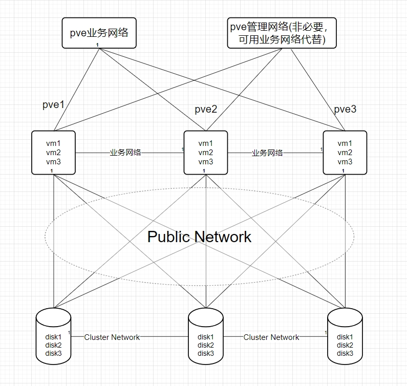

部署要求
- 部署最低要求
3台服务器
万兆网络
12块OSD硬盘（系统盘单独算）
- ceph存储
每台Server有5块盘，共15块，其中3块为pve系统盘，剩余12块为ceph的osd盘
其中ceph推荐使用ssd，如果有上百个机械也可不用ssd，ceph的速度和osd数量成正比
ceph的Cluster Network流量较大，为不影响业务，推荐单独接一个交换机
ceph的硬盘模式推荐为直通模式，raid会影响其crush算法的存储效率
- 网络规划
| 服务器 | pve管理网络 | pve业务网络 | Public Network | Cluster Network |
|---|---|---|---|---|
| server-1 | 192.168.1.110 | 192.168.1.110 | 10.0.0.10 | 172.16.1.10 |
| server-1 | 192.168.1.120 | 192.168.1.120 | 10.0.0.20 | 172.16.1.20 |
| server-1 | 192.168.1.130 | 192.168.1.130 | 10.0.0.30 | 172.16.1.30 |
- 网络架构图

安装步骤
！！！注意：每台服务器都要配置，具体看安装步骤
- 修改主机名（每台主机名不能重复）
hostnamectl set-hostname pve-ceph01
- 设置/etc/hosts主机名
#nano /etc/hosts
192.168.1.151 pve-ceph01.localhost pve-ceph01
- pve7或pve8换中科大源
#!/bin/bash
# Backup original sources.list
if [ -e /etc/apt/sources.list ];
then cp /etc/apt/sources.list /etc/apt/sources.list.bak
fi
# Backup pve-no-subscription.list
if [ -e /etc/apt/sources.list.d/pve-no-subscription.list ];
then cp /etc/apt/sources.list.d/pve-no-subscription.list /etc/apt/sources.list.d/pve-no-subscription.list.bak
fi
# Backup pve-enterprise.list
if [ -e /etc/apt/sources.list.d/pve-enterprise.list ];
then cp /etc/apt/sources.list.d/pve-enterprise.list /etc/apt/sources.list.d/pve-enterprise.list.bak
fi
# Backup ceph.list
if [ -e /etc/apt/sources.list.d/ceph.list ];
then cp /etc/apt/sources.list.d/ceph.list /etc/apt/sources.list.d/ceph.list.bak
fi
# Backup pveceph.pm
if [ -e /usr/share/perl5/PVE/CLI/pveceph.pm ];
then cp /usr/share/perl5/PVE/CLI/pveceph.pm /usr/share/perl5/PVE/CLI/pveceph.pm.bak
fi
# Determine Proxmox VE version
pve_version=$(pveversion|awk -F '/' '{print $2}'|cut -c1)
#prohibit pve-enterprise
sed -i '1s/^/# /' /etc/apt/sources.list.d/pve-enterprise.list
# Update sources.list with ustc mirror based on the detected Proxmox VE version
if [[ $pve_version == "7" ]]; then
echo "
deb https://mirrors.ustc.edu.cn/debian bullseye main contrib
deb https://mirrors.ustc.edu.cn/debian bullseye-updates main contrib
# security updates
deb https://mirrors.ustc.edu.cn/debian-security bullseye-security main contrib
" > /etc/apt/sources.list
echo "
deb https://mirrors.ustc.edu.cn/proxmox/debian/pve bullseye pve-no-subscription
" > /etc/apt/sources.list.d/pve-no-subscription.list
echo "
deb http://mirrors.ustc.edu.cn/proxmox/debian/ceph-quincy bullseye main
" > /etc/apt/sources.list.d/ceph.list
# 换中科大源，一定要修改这里，不然每次面板安装ceph时他会根据这里的配置生成 ceph.list 源文件
sed -i "s#http://download.proxmox.com/debian#https://mirrors.ustc.edu.cn/proxmox/debian#g" /usr/share/perl5/PVE/CLI/pveceph.pm
elif [[ $pve_version == "8" ]]; then
echo "
deb https://mirrors.ustc.edu.cn/debian bookworm main contrib
deb https://mirrors.ustc.edu.cn/debian bookworm-updates main contrib
# security updates
deb https://mirrors.ustc.edu.cn/debian-security bookworm-security main contrib
" > /etc/apt/sources.list
echo "
deb https://mirrors.ustc.edu.cn/proxmox/debian/pve bookworm pve-no-subscription
" > /etc/apt/sources.list.d/pve-no-subscription.list
echo "
deb https://mirrors.ustc.edu.cn/proxmox/debian/ceph-quincy/ bookworm no-subscription
" > /etc/apt/sources.list.d/ceph.list
# 换中科大源，一定要修改这里，不然每次面板安装ceph时他会根据这里的配置生成 ceph.list 源文件
sed -i 's|http://download.proxmox.com|https://mirrors.ustc.edu.cn/proxmox|g' /usr/share/perl5/PVE/CLI/pveceph.pm
else
echo "Unsupported Proxmox VE version."
exit 1
fi
# Update package index
apt update
echo "APT sources have been updated with ustc mirror for Proxmox VE $pve_version."
- 更新索引和时间同步
#安装ntp服务
apt install ntpdate -y
#与阿里云时间服务器时间同步，内网也可指定时间同步服务器（具体操作百度）
echo "0 0 * * 6 ntpdate ntp1.aliyun.com" >> /var/spool/cron/crontabs/root
- 配置ceph网络
#编辑/etc/network/interfaces，增加cluster network和public network
#此处网卡为ens19和ens20，实际部署看情况，也可在web界面配置ip
auto lo
iface lo inet loopback
iface ens18 inet manual
auto ens19
iface ens19 inet static
address 10.0.0.10/24
auto ens20
iface ens20 inet static
address 172.16.1.10/24
auto vmbr0
iface vmbr0 inet static
address 192.168.1.110/24
gateway 192.168.1.1
bridge-ports ens18
bridge-stp off
bridge-fd 0
#重启networking让配置生效
systemctl restart networking
#检测配置的ip是否生效
hostname -I
- 核实服务器之间的带宽，确保网络质量满足部署ceph的要求
#安装iperf
apt install iperf
#测试server-1和server-2之间的带宽
#server-1作为服务端
iperf -s
#server作为客户端,10.0.0.10和172.16.1.10为sever-1的public network 与cluster network
iperf -c 10.0.0.10
iperf -c 172.16.1.10
- 创建集群（此步骤只在一台服务器操作）
#创建一个名为pve的集群
pvecm create pve
#检测集群状态
pvecm status
- 其他服务器加入集群
#这个ip为pve的管理ip/业务ip
pvecm add 192.168.1.110
#检测集群状态
pvecm status
- 安装ceph
#pve7安装ceph的quincy版本
pveceph install --version quincy --allow-experimental 0
#pve8安装ceph的reef版本
pveceph install --version reef --repository no-subscription --allow-experimental 0
- ceph网络初始化（此步骤只在一台服务器操作）
pveceph init --network 10.0.0.10/24 --cluster-network 172.16.1.10/24
- 增加ceph 监视器和管理器(提高集群高可用)
#创建监视器
pveceph mon create
#创建管理器
pveceph mgr create
- 创建osd盘
#检测可以用来创建OSD的磁盘
lsblk
#创建OSD盘，此处为sdb，具体部署看实际情况
pveceph osd create /dev/sdb
#如果磁盘以前正在使用（例如，用于 ZFS 或作为 OSD），则首先需要清除该使用的所有痕迹。要删除分区表、引导扇区和任何其他剩余的 OSD，可以使用以下命令
ceph-volume lvm zap /dev/sd[X] --destroy
- 创建存储池（此步骤只在一台服务器操作）
pveceph pool create deskpool --add_storages
排错常用命令
#！！！以下内容ceph供排错使用
#查看ceph集群状态
seph -s
#查看管理节点
ceph mon stat
#查看监视节点
ceph mgr stat
#查看osdh状态和osd目录树
ceph osd stat
ceph osd tree
#查看ceph的io
ceph iostat
#下线osd
ceph osd down 0
#让编号为0的osd down掉，此时该osd不接受读写请求，但仍然活着
#拉起osd
ceph osd up 0
#让编号为0的osd up，此时该osd接受读写请求
#将osd逐出集群
ceph osd out 0
#将一个编号为0的osd逐出集群，此时可以做维护
#将osd加入集群
ceph osd in 0
#将一个编号为0的osd加入集群
#删除osd
ceph osd rm 0
#在集群中删除一个 osd,可能需要先 stop 该 osd,即 stop osd.0
#删除host节点：ceph osd crush rm node1
#在集群中删除一个host节点
#创建pool池：ceph osd pool create vms(名称) 64(64是PG)
#CEPH服务常用命令
#重启mon服务
systemctl restart ceph-mon.target
#重启osd服务
sysetmctl restart ceph-osd.target
#重启mgr服务
systemctl restart ceph-mgr.target
#删除pve节点
在正常节点上踢出故障节点
{
#查看集群成员 + 查看集群状态
pvecm nodes
pvecm status
#在pve集群中删除故障节点
pvecm delnode $hostname
#删除 故障节点的 ceph节点中故障的 mon信息（前提是有的话）
ceph mon remove $hostname
#删除故障节点上osd相关信息
ceph osd crush remove osd.$id
ceph auth del osd.$id
ceph osd rm osd.$id
}
在故障节点上，清除集群信息，单机运行
{
#首先在待隔离节点上停止 pve-cluster 服务
systemctl stop pve-cluster.service
systemctl stop corosync.service
#将待隔离节点的集群文件系统设置为本地模式
pmxcfs -l
#接下来删除 corosync 配置文件
rm /etc/pve/corosync.conf
rm -rf /etc/corosync/*
#最后重新启动集群文件系统服务
killall pmxcfs #停止集群文件系统服务
systemctl start pve-cluster.service
}
#pg重建
ceph osd force-create-pg 1.0 --yes-i-really-mean-it
#命令创建osd盘
##此处的sdb具体看你添加的磁盘，可以lsblk查看
pveceph osd create /dev/sdb
#彻底卸载ceph
systemctl stop ceph-mon.target
systemctl stop ceph-mgr.target
systemctl stop ceph-mds.target
systemctl stop ceph-osd.target
rm -rf /etc/systemd/system/ceph*
killall -9 ceph-mon ceph-mgr ceph-mds
rm -rf /var/lib/ceph/mon/ /var/lib/ceph/mgr/ /var/lib/ceph/mds/
pveceph purge
apt purge ceph-mon ceph-osd ceph-mgr ceph-mds
apt purge ceph-base ceph-mgr-modules-core
rm -rf /etc/ceph/*
rm -rf /etc/pve/ceph.conf
rm -rf /etc/pve/priv/ceph.*